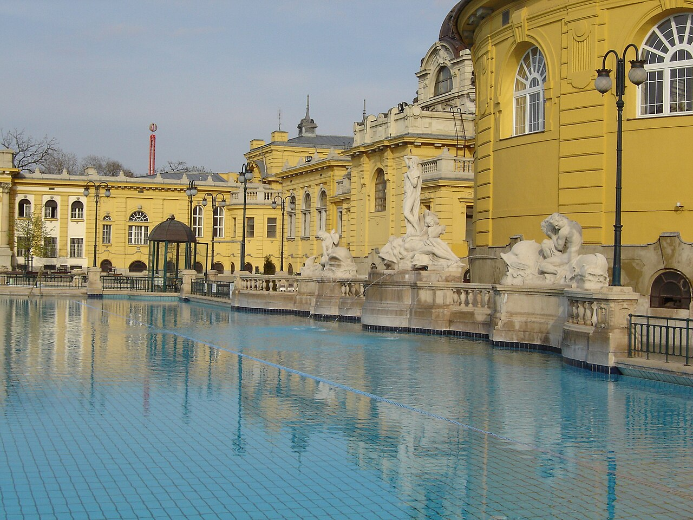

Ruta 01
Budapest imprescindible
La mejor primera toma de contacto: Buda, Pest, Parlamento y un baño termal. Combina los grandes iconos con paseos que ayudan a entender cómo el Danubio organiza la ciudad, sin llenar cada hora con entradas.

Primer paseo por Pest
Llegada y equipaje
Hora orientativa. Activad el resto solo si estáis en el centro antes de las 16:30.
Mercado Central · 60 min
Construido en 1897, es el mayor mercado tradicional cubierto de Hungría y una buena introducción a la arquitectura de hierro de Pest. Recorred la planta baja para reconocer paprika, embutidos, encurtidos y repostería local; la planta superior está más orientada a comida preparada y recuerdos. Cierra a las 18:00.
Gratis
Puente de la Libertad y Danubio · 75 min
El puente verde enlaza directamente el mercado con la colina Gellért y ofrece una primera vista despejada de las dos orillas. Continuar a pie hacia el centro permite distinguir la Buda montañosa de la Pest llana y localizar varios puntos de los días siguientes. Es un paseo gratuito y funciona mejor sin prisas.
Barrio judío · 90 min
El recorrido reúne la fachada de la Gran Sinagoga, patios, pasajes, arte urbano y antiguos edificios del gueto. También permite entender cómo la zona se transformó después en uno de los centros nocturnos de Budapest, con sus bares en ruinas. El interior de la sinagoga está cerrado en estas fechas, pero el paseo exterior sigue aportando contexto.
Buda y la gran panorámica
Puente de las Cadenas · 30 min
Inaugurado en 1849, fue el primer enlace permanente entre Buda y Pest y sigue siendo una de las imágenes esenciales de la ciudad. Cruzarlo a pie permite ver cómo el castillo se eleva sobre Buda y cómo se abre la ribera monumental de Pest. A primera hora hay mejor luz y menos tránsito peatonal.
Bastión de los Pescadores · 45 min
Este conjunto neorrománico se diseñó como gran balcón urbano y enmarca una de las mejores vistas del Parlamento, el Danubio y Pest. Sus arcadas y torres hacen que la visita merezca la pena incluso sin subir a la zona de pago. La terraza inferior es gratuita; la superior cuesta 1.700 Ft · 4,69 € y abre 09:00–21:00.
Iglesia de Matías · 60 min
El tejado de cerámica Zsolnay, las vidrieras neogóticas y las paredes policromadas la distinguen de una catedral centroeuropea convencional. Aquí fueron coronados los dos últimos reyes húngaros, por lo que la visita conecta arquitectura, religión e historia de Estado. Horario habitual del sábado: 09:00–17:00, sujeto a culto. Entrada: 3.400 Ft · 9,38 €.
Castillo de Buda · 90 min
El antiguo Palacio Real y el distrito del Castillo forman parte del patrimonio mundial de la UNESCO. El recorrido propuesto atraviesa patios, murallas y terrazas para disfrutar de la arquitectura y las vistas sin comprar entrada. El interior alberga la Galería Nacional Húngara y el Museo de Historia de Budapest, que aquí se dejan fuera para mantener el horario.
Basílica de San Esteban · 90 min
La gran cúpula alcanza la misma altura simbólica que el Parlamento y domina el perfil de Pest. Dentro se visita la nave y la Santa Diestra, la reliquia asociada al primer rey de Hungría; la terraza completa la experiencia con una panorámica de 360°. Billete completo: 6.800 Ft · 18,76 €. Termina antes del cierre de la nave (17:45).
Parlamento y termas
Kossuth tér y Parlamento por fuera · 90 min
La plaza permite leer las cuatro fachadas del Parlamento, su relación con el Danubio y los memoriales de 1956 sin depender de una visita que puede agotarse o cancelarse por protocolo. El exterior es gratuito y siempre accesible; si la web oficial muestra tres entradas EEE, este bloque puede convertirse en la visita interior de 45 minutos por 7.000 Ft por persona, llegando media hora antes con documento.
Zapatos en la orilla · 30 min
Las esculturas de calzado recuerdan a las víctimas que fueron obligadas a descalzarse antes de ser asesinadas junto al Danubio por milicianos de la Cruz Flechada durante la Segunda Guerra Mundial. Es un memorial pequeño y deliberadamente sobrio: conviene recorrerlo en silencio y dejar tiempo para leer el entorno. Gratis y siempre accesible.
Plaza de los Héroes y Városliget · 75 min
El Monumento del Milenio cierra la avenida Andrássy con una representación monumental de la historia húngara. Al atravesar la columnata se pasa directamente a Városliget, el gran parque urbano donde están las termas, museos y el castillo de Vajdahunyad. El recorrido exterior es gratuito y sirve de transición antes del baño.
Baños Széchenyi · 3 h 30 min
El complejo neobarroco combina piscinas interiores con grandes vasos termales al aire libre y resume la cultura de balneario de Budapest. El tiempo asignado incluye vestuario, ducha y pausas, de modo que no sea solo una entrada rápida para hacer fotos. Domingo 08:00–20:00; las piscinas cierran 20 min antes. Entrada con taquilla personal: 14.800 Ft · 40,82 €.
Mañana condicionada al vuelo
Desayuno cerca del hotel y traslado. No programar ni pagar ninguna visita.
08:00–09:30 paseo por la isla Margarita, el gran espacio verde del Danubio. Un recorrido corto por el extremo sur permite ver jardines, caminos arbolados y la fuente musical sin alejarse demasiado; después, regresad al hotel y salid con el margen que indique el aeropuerto.